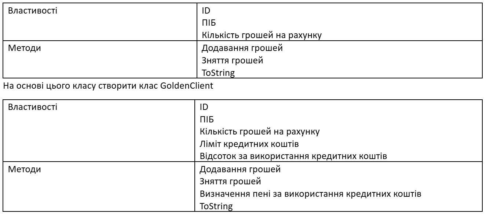

Homework 21
-
Date Tasks
SolutionTask 1. Display on the screen how many minutes the user has been on the site
Task 2. We enter the start time of the procedure (the procedure lasts 30 mins). Determine if the procedure is still going on.
Task 3. Determine how much time is left until the end of the work day (until 17:00)
Task 4. Create a function that allows you to determine if the specified date and time are within the current week (from Monday 0 hours, 0 minutes, to Sunday 23 hours, 59 minutes)
Task 5. When entering the site, greet the user or display a message about how many minutes are left until the start of the work day (start at 8:00).
Task 6. Display how many hours it is in London, Paris, and Sydney.
Task 7. Given a list of students (name and birth date: in the form of text (day.month.year)). Find the oldest student
Task 8. Determine how many seconds have passed since the user entered the site until they moved the mouse.
Task 9. The user planned to take a 200-day maternity leave (the start date of the leave is entered). Determine if the leave is already in progress and if it has not yet ended.
Task 10 . Given the production date of yogurt (we enter the year, month, day) and the shelf life. Determine if it is still fit for consumption at the current moment.
Task 12. Create an array with 1000 elements from 1 to 800. Compare the sorting time of bubble sort and insertion sort.
-
Task 4
SolutionThe user enters the student's month of study (validate that it is a number, that it is between 1 and 12, and that it is not a vacation month) and the student's grade (validate that it is a number and that it is between 1 and 100). Determine whether the student will be able to improve the grade (if the grade is poor and it is not the last month of the semester). Handle all validation errors using the appropriate exception classes.
-
Task 1
SolutionCreate a Client class
